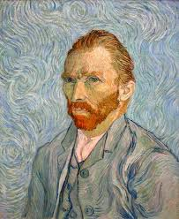

Van Gogh
was a Dutch post-impressionist painter who is among the most famous and influential figures in the history of Western art. In just over a decade, he created about 2,100 artworks, including around 860 oil paintings, most of which date from the last two years of his life. They include landscapes, still lifes, portraits and self-portraits, and are characterised by bold colours and dramatic, impulsive and expressive brushwork that contributed to the foundations of modern art. He was not commercially successful, and his suicide at 37 came after years of mental illness, depression and poverty.
|

|

|